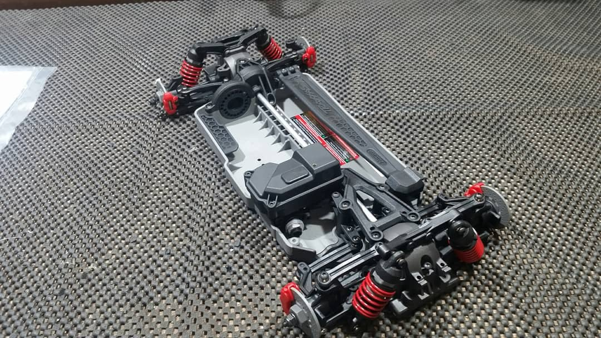
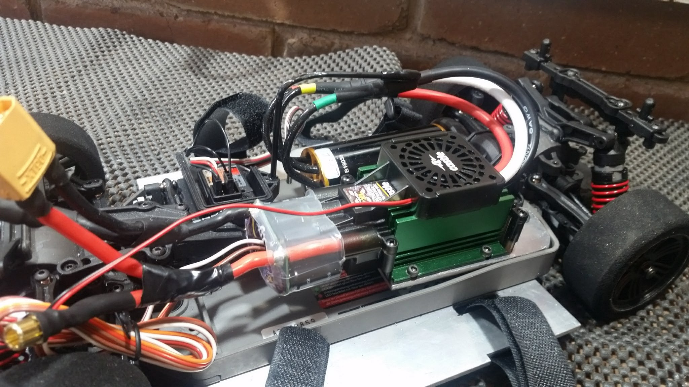
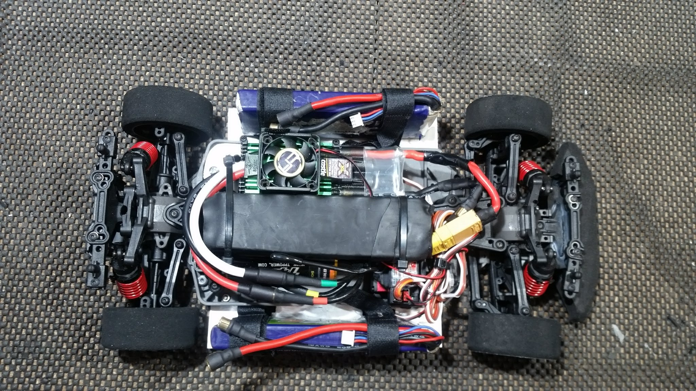
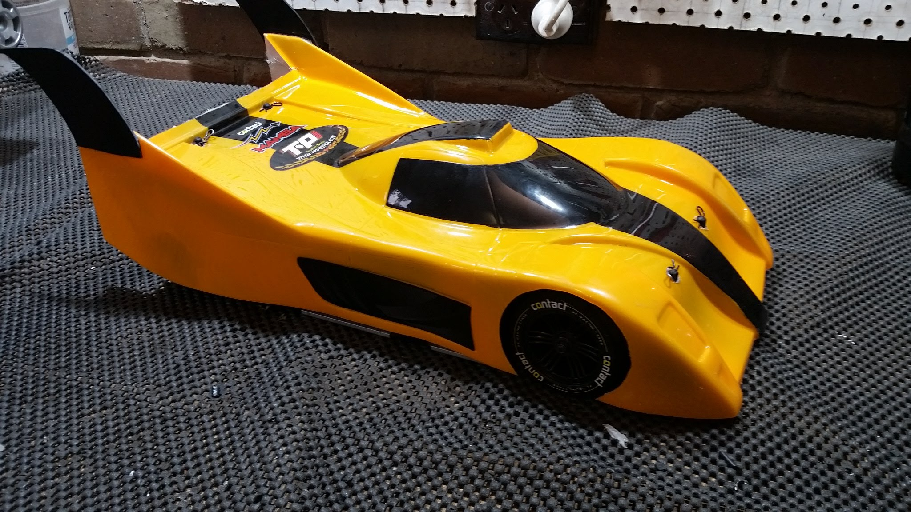
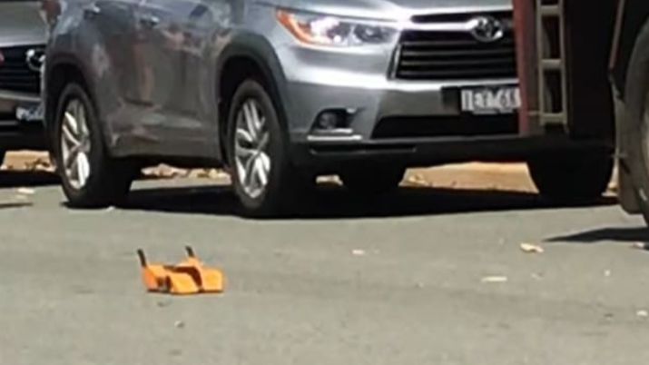
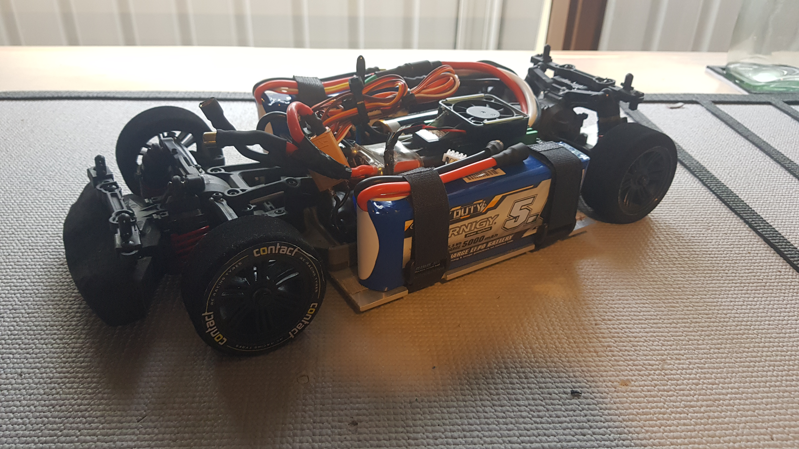
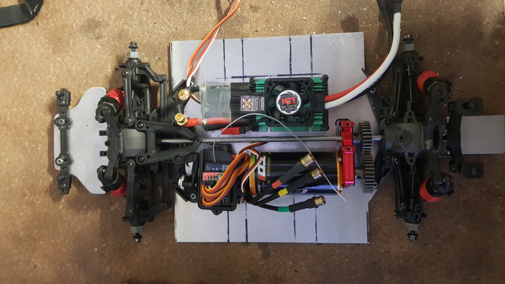
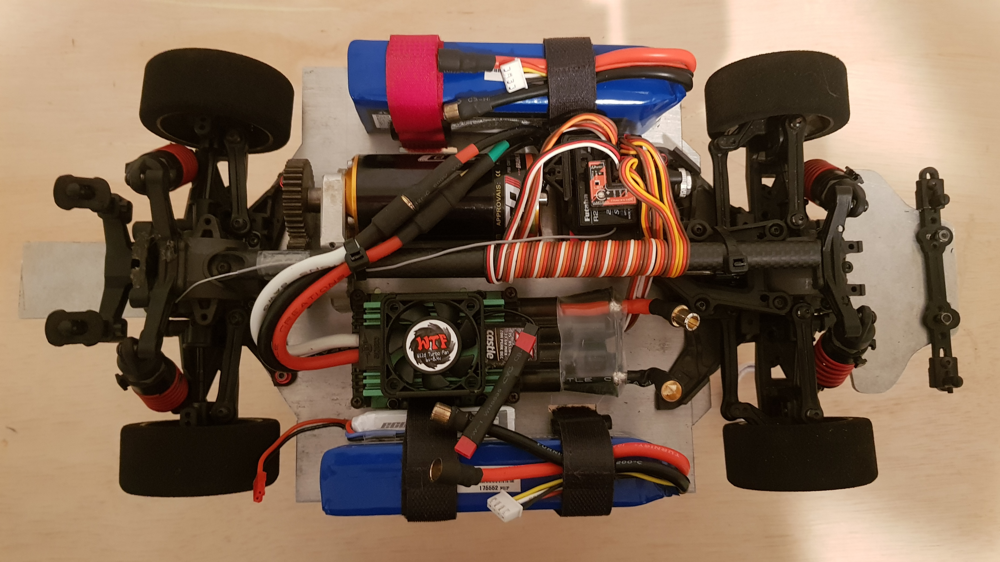

Project overview
A 1/10 Traxxas 4-tec 2.0 RC car purpose built for straight line speed. Featuring many custom parts, and a ridiculous 8S lipo power system, my goal for this RC car was to reach 200kph and beyond.
1 / 8
This build started as a rolling chassis. I chose the Traxxas 4-Tec 2.0 for its bulletproof drivetrain and great aftermarket support.
2 / 8
The plan was to cram a massive 8S power system into the tiny 1/10 scale car. With some custom aluminum mounts and battery trays, I was able to fit the Castle XLX ESC and TP Power 2200kv motor into this chassis.
3 / 8
I made a large capacitor bank to manage voltage ripple under load. In this photo a pair of 2s lipo's are fitted.
4 / 8
I used an aerodynamic body shell based on the Toyota GT-One. The body was reinforced with fibreglass to stiffen the thin polycarbonate. I also made and attached vertical fins to the rear for additional stability.
5 / 8
An initial test on 4S lipo (half power) saw the car reach 124kph. At the end of this run, the car hit a road reflector and crashed. Only the body shell was damaged.
6 / 8
After a rebuild, the car was ready for testing on 6s lipo power. The test didn't last long, as the spur gear wasn't tightened properly. The free spinning spur gear quickly melted the aluminium centre drive shaft. As opportunities to test the car arose only once or twice a year, further testing was never completed.
7 / 8
In 2020, I decided a revival was needed. The car was completely overhauled, with a custom aluminium chassis and mounts. This allowed space for the huge 4s batteries and much taller gearing.
8 / 8
A carbon fibre centre brace was added to stiffen the chassis, along with an electronic gyro to stabilize the steering, and a smaller battery to power the auxiliary electronics. Unfortunately due to costs, lack of testing opportunities, and interest in other projects, this RC car was shelved.